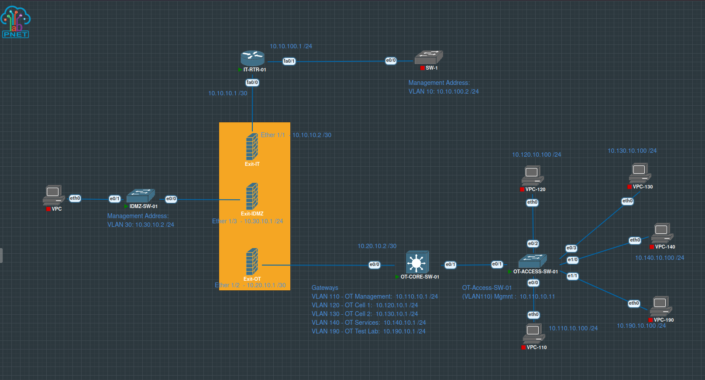
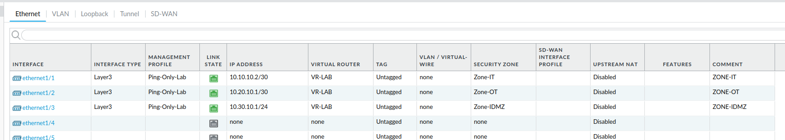
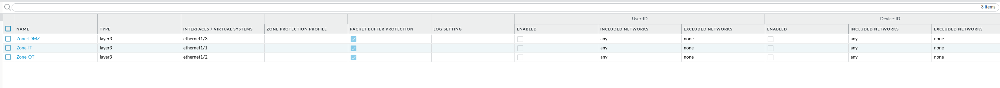
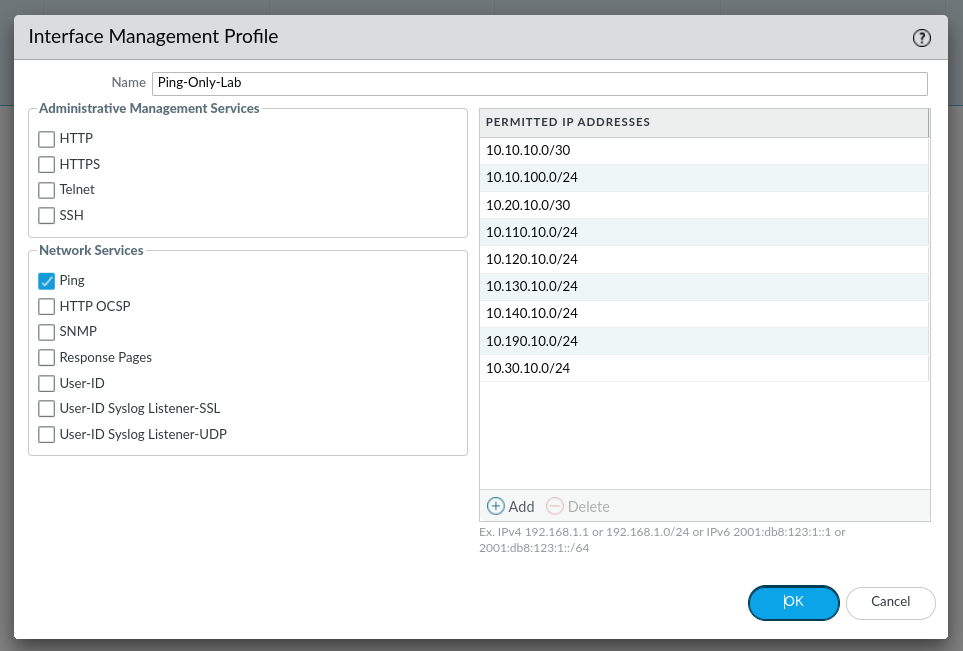
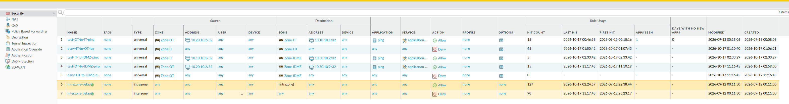
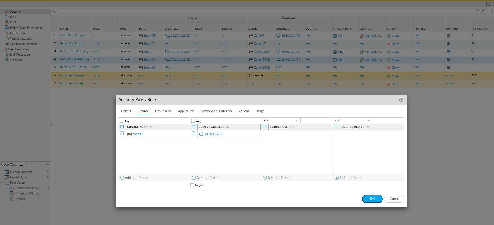
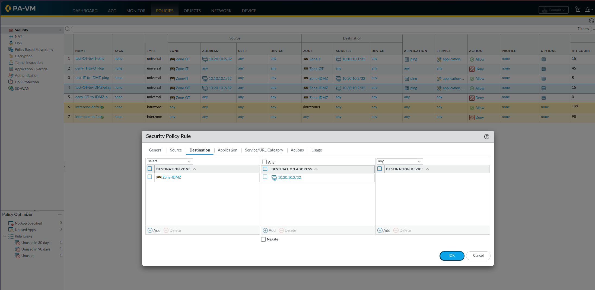
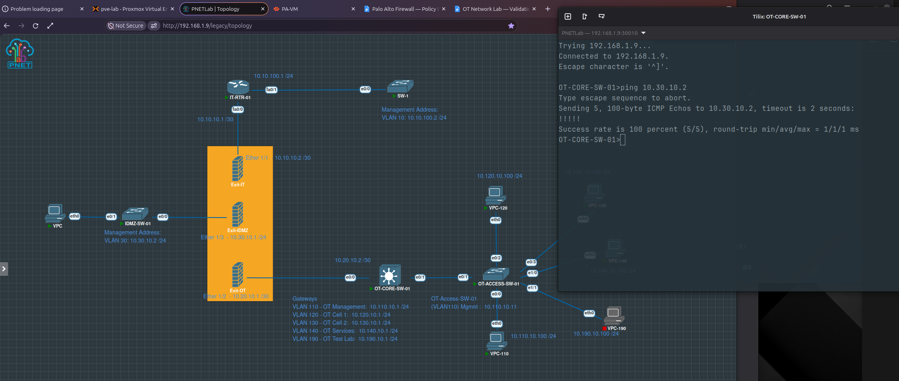
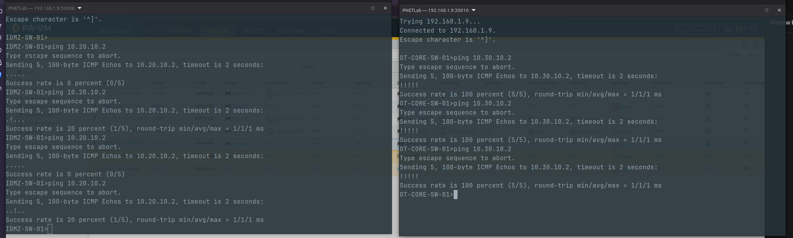
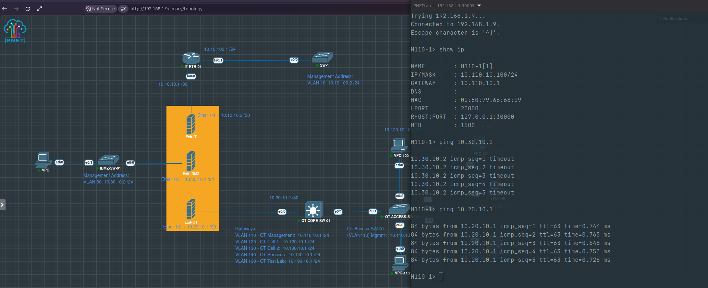

The problem
Can one required OT-to-IDMZ path work without creating broad access?
A diagram and a set of firewall zones do not prove segmentation. The lab needed observed evidence that a deliberately authorised flow would succeed and that closely related but unauthorised flows would fail.
The test focused on ICMP because it provides a simple, repeatable way to validate addressing, routing, stateful return traffic, and security-policy selection. It is a connectivity checkpoint rather than a claim that the production-style application design is complete.
The selected OT Core address reached the selected IDMZ address. An IDMZ-initiated test and a test from an unauthorised OT endpoint were blocked as expected.
Lab architecture involved
Three zones, one firewall control point
The PNETLab topology connects the IT, industrial DMZ, and OT networks to separate Layer 3 interfaces on a Palo Alto VM-Series firewall. The OT Core reaches the firewall over the 10.20.10.0/30 transit, while the IDMZ switch uses the 10.30.10.0/24 segment.


ethernet1/2 terminates the OT transit and ethernet1/3 terminates the IDMZ network inside VR-LAB.

Acceptance criteria
Define the expected result before testing
- Authorised flow: OT Core
10.20.10.2can ping IDMZ destination10.30.10.2. - Stateful return traffic: replies associated with the authorised session can return to the source.
- Reverse initiation: the IDMZ cannot initiate a new ICMP session towards the OT network.
- Source restriction: another OT endpoint,
10.110.10.100, cannot use the OT Core's specific allow rule.
This combination matters because a successful ping alone could be produced by an overly broad rule. The negative tests provide evidence that the source and direction restrictions are meaningful.
Configuration being validated
A narrowly scoped OT-to-IDMZ test rule
The policy table contains an explicit rule named test-OT-to-IDMZ-ping. It permits the ping application from the OT zone using source 10.20.10.2/32 to the IDMZ zone using destination 10.30.10.2/32. A following OT-to-IDMZ deny rule and the default inter-zone deny behaviour prevent broader communication.


Zone-OT and only the OT Core address 10.20.10.2/32.
Zone-IDMZ and only 10.30.10.2/32.Positive test
The authorised OT Core flow succeeds
The OT Core initiated five ICMP echo requests to the IDMZ switch address. All five replies returned, producing a 100% success result with a reported round-trip time of 1 ms in the virtual lab.

10.20.10.2 → 10.30.10.2 completes successfully through the explicit OT-to-IDMZ policy.This result proves that the selected forward path, security rule, and stateful return path work for the tested ICMP session. It does not mean every OT source or application has access to the IDMZ.
Negative tests
Closely related but unauthorised traffic remains blocked
Two negative tests were used to challenge the rule boundaries. First, the IDMZ switch attempted to initiate traffic towards the OT transit address. Second, an OT management endpoint with address 10.110.10.100 attempted to reach the same IDMZ destination.


The gateway response in the second test is important: it separates local OT connectivity from the blocked inter-zone flow. The endpoint is operational, but it does not match the specific source permitted by the firewall rule.
Observed evidence
Validation results
| Test | Expected | Observed | Result |
|---|---|---|---|
| OT Core → IDMZ | Permitted | 5/5 ICMP replies | Pass |
| IDMZ → OT | Denied | ICMP session failed | Pass |
| Unauthorised OT endpoint → IDMZ | Denied | Gateway reachable; IDMZ ping timed out | Pass |
Overall classification: Pass within the defined ICMP test scope.
Engineering conclusion
Segmentation is demonstrated through behaviour, not labels
The collected evidence shows that the firewall is enforcing the intended source and direction restrictions for this test. The permitted OT Core session crosses the security boundary successfully, while reverse initiation and a different OT source are denied.
The result is deliberately narrow. It validates ICMP behaviour for the documented addresses; it does not yet prove application-layer controls, all routing-table entries, every possible OT/IDMZ path, or production performance. Those limits are part of the conclusion rather than hidden behind a successful test.
What the evidence proves
A specific OT source and IDMZ destination can communicate using the explicitly authorised test application, while selected unauthorised variations remain blocked.
Next validation step
Move from diagnostic traffic to one realistic IDMZ service
The next test will replace ICMP with a defined application flow, such as HTTPS, syslog, or a controlled update service. The rule will specify one source, one destination, and one required port.
- Deploy or identify the IDMZ service endpoint.
- Record the required source, destination, application, and port.
- Test the authorised connection.
- Repeat from an unauthorised source.
- Attempt an unauthorised service from the approved source.
- Correlate endpoint output with firewall logs, rule hit counts, and a packet capture.
This will extend the current routing and policy checkpoint into application-aware, evidence-led IDMZ validation suitable for a later LinkedIn progress article.
Continue exploring
Follow the OT Network Lab validation series.
Review the earlier infrastructure baseline or return to the full OT Network Lab case study.